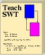

TeachSWT 2002
Weiteres Material
Mindmaps aus den Tutorien 2002
Readme-Dateien
Ihr Web-Browser unterstützt keine Stylesheets:
Der Web-Browser, den Sie verwenden, unterstützt CSS1-Stylesheets
leider nur unvollständig. Sie sehen deshalb ein stark
vereinfachtes Layout dieser Seite(n). Wenn Sie das ursprünglich
von uns beabsichtigte übersichtlicher und ästhetischere Layout
genießen möchten, könnten Sie in Erwägung ziehen, einen neueren
Browser zu verwenden.
--
Informationen zu CSS1-kompatiblen Web-Browsern finden Sie bei der
Upgrade-Initiative
des Web-Standards-Projektes.
E5/Mac, IE6/Windows, Netscape6, and Opera5 (und höher) sowie
Mozilla oder Firefox sollten alle CSS1-kompatibel sein.